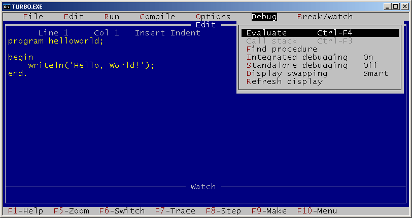

Proceduralni programski jezik (Pascal)
Jedan je od prvih proceduralnih programskih jezika. Pogodan je za učenje programiranja. Kod Pascala ima par ključnih stvari :
- uvijek počinje rječju begin i završava s end i točkom
- sve naredbe završavaju točka-zarezom ;
- glavni program se uvijek nalazi na kraju
- između begin i end se nalazi blok naredbi
